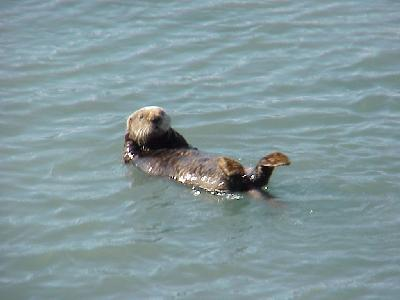
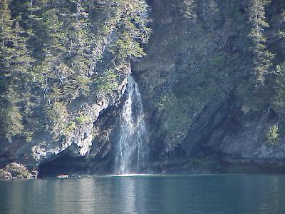
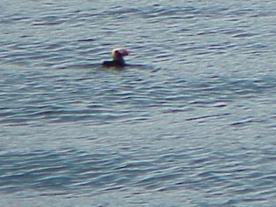
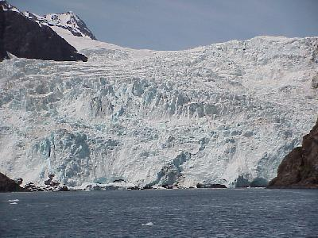
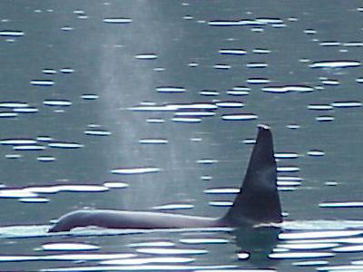
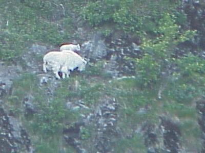
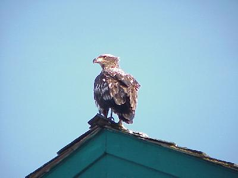
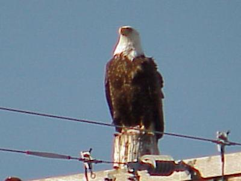
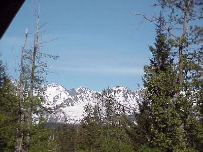

| Today will be a long day, just incidental
miles, drving from the hotel to Seward, then we are off
on one of the Kenai Fjords National Park Wildlife Tours. This was a long day for us, so a lot of pictures to load, this page may take a few minutes longer. |
|
| Today did not disappoint us in terms of wildlife. We barely got out of the harbor and a Dall's Porpoise made his appearance, unluckily they are fast, a few nice pictures of water splashing, that was it. But two Sea Otters were much more accomodating; rolling atound next to the ship for a few minutes. |  |
| We had the one in 100 day for our cruise. The sky was clear, the ocean extremely calm, no wind, but it was still a little cool, about 55 degrees. There were few clouds and almost no haze. The captain pointed out Montague Island, some 80 miles away that can only be seen from the fjords area about four times a year. In addition to the wildlife, there were numerous waterfalls on the stone cliffs. |  |
| Sue: Puffins galore, floating around on the ocean, unluckily they are almost as fast as the Porpoise, and a little shy. They did not let the boat get too close. We will have to see if we can do better tomorrow. |
 |
| Well, the slowest thing (almost, as we will get to later) out here to take a picture of was the Glacier. It moves at the speed your finger nails grow. Now the almost part; when the glacier calves, pieces break off and fall into the ocean, as it did a few times while we were there, those pieces move fast - didn't get a picture of one of them. |  |
| Well, back to something a little more lively than watching ice melt -- Steller Sea Lions. These folks were just laying around waiting to have their pictures taken. This was a group of young males. |  |
| Julie: Ok, you get your whale, we saw something like 3 of them, all Orcas, or "Killer Whales." Now the bad news, they are not actually whales, they are part of the dolphin family. |
 |
| More Mountain Goats. On some of the almost shear rock cliffs this mother and kid(s) goats were out grazing. There were also a few more near by, including another mother and kid. |  |
| Back in the Seward Harbor we also got the opportunity to see a few Bald Eagles. This one is a young eagle, his head and tail feathers will not turn white until he is 4-5 years old. |  |
| This Bald Eagle is older, you can tell from two indicators: first, his head is white, and second: he can play around next to electricity. |  |
| Back at the room, and a little rest. This is the view off the balcony. A real wonderful day, with exceptionally great weather. |  |
| Wildlife for the day included: black bear
(1); mountain goats (7); eagles (6); harbor porpoise (1);
dall porpoise (2); puffins (many); cormorants (many); sea
otters (4); steller sea lions (11); orcas (3); harbor
seal (1). Tomorrow, a little more sight seeing in the area, then back to Anchorage to put Merry Lou on the red eye home. |
|